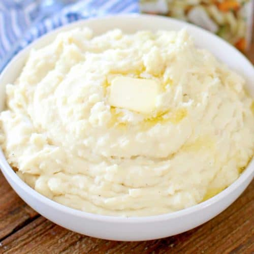

Simple Mashed Potatoes
Ready to learn how to make the best mashed potatoes ever? You're in luck! This top-rated mashed potatoes recipe, made with just a few ingredients, produces crowd-pleasing results every time.
 |
 |
 |
Ingredients Needed:
- 2 pounds baking potatoes, peeled and quartered
- 3 cloves garlis, peeled, or to taste (optional)
- 1 cup milk
- 2 tablespoons butter
- Salt and ground black pepper to taste
Servings: 4
Instructions:
- Bring a large pot of salted water to a boil. Add potatoes and garlic, lower heat to medium, and simmer until potatoes are tender, 15 to 20 minutes.
- When the potatoes are almost finished, heat milk and butter in a small saucepan over low heat until butter is melted.
- Drain potatoes and return to the pot. Slowly add warm milk mixture, blending it in with a potato masher or electric mixer until potatoes are smooth and creamy.
- Season with salt and pepper to taste